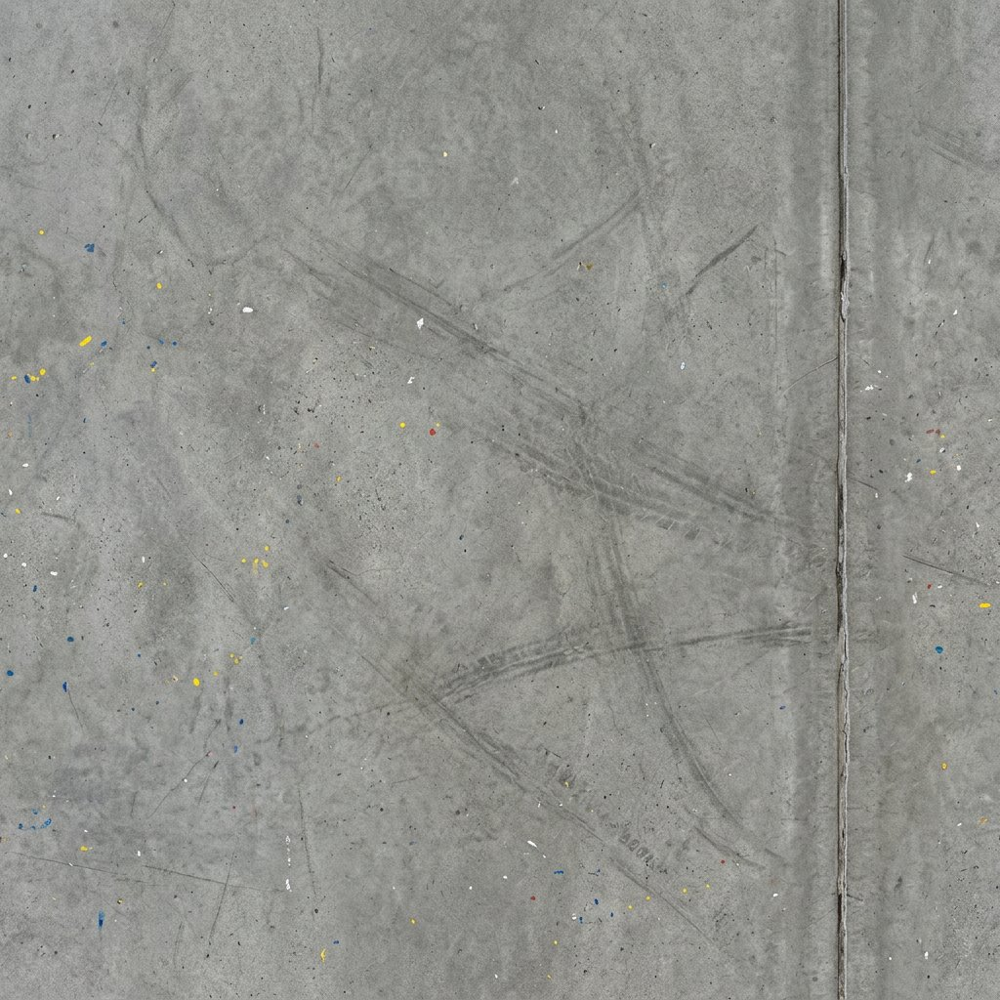
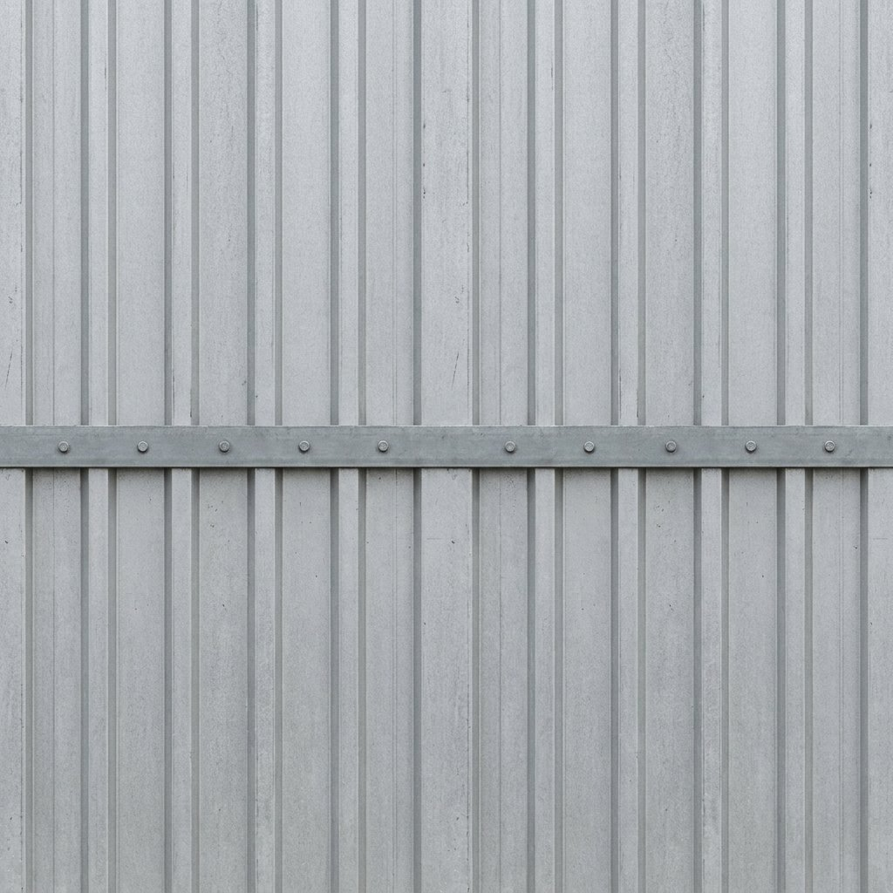

Checking why...
Try again
Tip: hold Shift and press the browser reload button to skip the cache.


Why:
Control:
Press Esc to resume.
Back to the bay
Close with Esc. Taking you to a place walks you over and turns you to face it. Flagging still happens in the bay, with a click or the E key.
Close